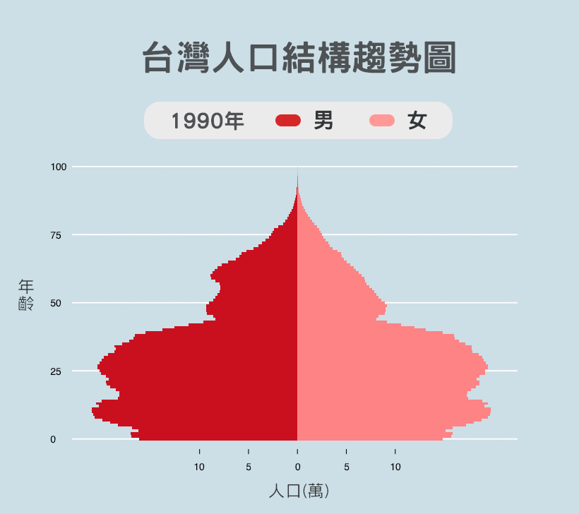
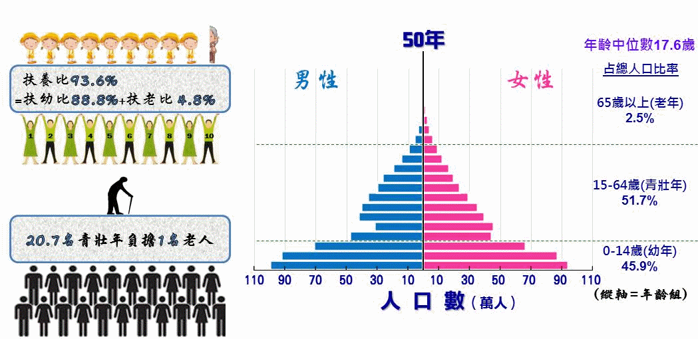
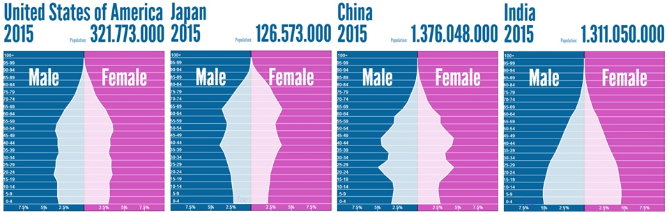
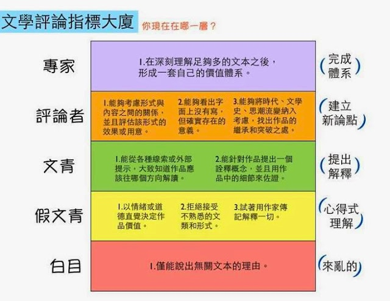
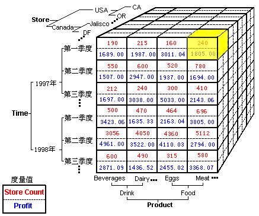

MoClippings #11 站在嘴砲金字塔的頂點
發刊日 : 2016/09/01 - 2016/09/17
![[Hierarchy of disagreement]](/Clippings/2016/MoClippings-11/14730090466912.jpg "[Hierarchy of disagreement]")
資訊知事
- 
- 國發會資料：國家發展委員會-中華民國人口推估（105至150年）
- 
- 《中華民國統計資訊網》縣市重要統計指標查詢系統
- 表格: 【改制後】縣市人口概況重要統計指標
- 中華民國 內政部戶政司 人口統計資料

-
- 
四種類型的技術型創業者 | 灣區日報 - 從一個風投的角度看技術型創業者的種類：首席產品官型、VP Engineering 型（側重管人）、CTO 型（側重技術廣度優先）、首席架構師型（側重技術深度優先），但現實中的技術型創業者的能力典型一般是混搭的，比如有可能是30% 的首席產品官型 + 30%的 VP Engineering 型 + 20% CTO 型 + 20% 首席架構師型。
行銷推廣
每個人都有權利去改變-《Mr.Bartender 》第三季-EP3預告 - YouTube - 如果真的想要改變的話，就是要回到最基礎問題，用最基本的方法，開始新的模式呀。如果，一直用舊有的思維，在預期中打轉，那就不較改變了。
Google tag manager-web analytics101 - 黃道育 一位 Google Tag Manager Analytics 專家。
-
数据化运营的三板斧
- 一、建立用户转化漏斗
二、用多维度数据报表找问题
- 
三、用A/B测试指导产品演进
- 数据运营解决不了的问题
- 一、产品创新方向无法通过数据获得
- 二、长期用户反馈很难通过数据判断
- 三、博弈性的场景无法用数据决策
- 用户快速增长到底靠什么
- 一、做出真正优秀的产品
- 二、找到战略性推广渠道
- 三、利用病毒式传播手段
- 四、建立品牌的用户认知

專案管理
- 是什麼造就了優良的軟體開發團隊文化？ | Soft & Share
- 最佳化重複步驟(iteration)的速度
- 毫不留情地推向自動化
- 建立正確的軟體抽象層
- 使用程式碼審查流程專注產出高品質代碼
- 維持一個彼此尊重的工作環境
- 建立程式碼共享所有權
- 投資於自動化測試
- 分配 20 ％的時間策略
- 建立一個持續學習和改善的文化
- 招聘最好的人
技術知事
開發心法
- 更快更安全: 每個網站都應該升級到 HTTP/2 | ihower { blogging } - 在這邊文章中，提到了 HTTP/2 帶來的好處。
- High Scaling Websites Structure Learning Notes 大型網站架構學習筆記 · GitBook - 大型網站的架構筆記電子書
- 《約耳談軟體(Joel on Software)》翻譯計畫 - The Joel on Software Translation Project
- 谈谈互联网后端基础设施 - 后端技术杂谈 | 飒然Hang - 一篇需要花挺多時間閱讀的軟體架構文章。內容談到 API 使用、業務應用和後端基礎框架、緩存、數據庫、搜索引擎、消息隊列、文件儲存、統一認證中心 SSO、服務治理框架等等的知識。很值得花時間一讀。
- 受邀的TDD Workshop - Coding Dojo - 關於 TDD 觀念的好文
- 软件架构入门 - 阮一峰的网络日志
- Software Architecture Patterns
- 架構分類：
- 一、分層架構：例如 OSI七層
- 二、事件驱动架构 (event-driven)：例如
- 三、微核架構 (mircokernel)
- 四、微服務架構 (microservices)
- 五、雲架構 (Cloud)
測試工具
PHP Library or 工具
- PHP 7.1: better syntax, a more consistent language — Pascal MARTIN : Web & PHP development - PHP 7.1 將帶來的幾個特色說明
- charlietag/os_preparation: OS Preparation - Packages Pre Installation - 快速在 CentOS 7 上建立 PHP-FPM, Nginx 等系統環境的工具。
- Kin Calendar
- 跟 google calendar 做結合讓行事曆有更好的使用者體驗
Sortd Smart Skin for Gmail - 團隊使用 gmail 當做工作管理的好工具
Swagger – The World’s Most Popular Framework for APIs. - 製作 API 手冊很推薦的工具
so-fancy/diff-so-fancy: Good-lookin’ diffs. Actually… nah… The best-lookin’ diffs. - git 比較工具
- Microsoft/msphpsql: msphpsql - 微軟官方直接提供給 Linux 使用的 SQL Server Driver 了。
Supervisor: A Process Control System — Supervisor 3.3.1 documentation - 一個系統控制的工具
Minio - Minio is an object storage server built for cloud application developers and devops. 一個協助存放檔案、照片、影片、影像檔的服務工具
Refactoring to Collections 讀後心得 « 技術相關筆記 - 關於 Refactoring to Collections 這本書的心得筆記，很推薦看完他。
Squel.js - SQL query string builder for Javascript - 用來組 SQL 語法的 JavaScript library ，可以減少很多組合 SQL 字串時的錯誤。
- Laravel 5 學習筆記 · GitBook
- 5 Best open source project built using Laravel | Dunebook - 使用 Laravel 所建立的五個 OpenSource 專案，包含 CMS, Ticket Tracking, Video, 時間管理系統：
- Flarum - Flarum – Forums Made Simple
- Vuedo - Vuedo/vuedo: Vuedo is a blog platform, built with Laravel and Vue.js.
- Lavalite - LavaLite/cms: Lavalite - Multilingual CMS built on Laravel 5.2 (Multiauth & API enabled) 以及 Lavalite - CMS Built with Laravel 5.2 and Bootstrap 3.
- Faveo - Help Desk Software & Ticket Management System - Faveo
- TimeGrid - timegrid.io
前端網頁開發工具
- 一頭栽入 Vue.js TDD 的世界 (威力加強版) - Google 簡報 - 鐵哥在 VueDinner 上關於 Vue.js 與 TDD 結合的分享簡報
- 關於 Page Object 是否應該擺放 assertion 的討論。 https://www.facebook.com/jace.ju/posts/926452234103137
- jaceju-tutorial-examples/vue-todomvc: TodoMVC by Vue.js
- Vue.js @ NingJS 2016 - Google 簡報
- gulp 學習筆記 · GitBook
- kdchang/reactjs101: 從零開始學 ReactJS（ReactJS 101） - 是一本希望讓初學者一看就懂的 ReactJS 中文入門教學書，由淺入深學習 ReactJS 生態系 (Flux, Redux, React Router, ImmutableJS, React Native, Relay/GraphQL etc)。
Redmine
- mikitex70/redmine_drawio: Macro plugin to embed draw.io diagrams into Redmine wiki pages - 搭配 draw.io 到 Redmine 裡
- 39648421 / redmine_chat — Bitbucket - 讓專案參與者也能夠有像 Facebook 一樣的線上對談機制
- dchbx/redmine_analytics: This sends analytics information to Segment, which can then be sent to other sources, just as Google Analytics, MixPanel, AWS S3, SalesForce, and many others. - 在 Redmine 裡埋入 google analytics 等分析
- dchbx/redmine_reports: Do you have any issues that are outside your SLA windows? What is the average wait time for a ticket for each user? - 一個 Redmine 的統計報表